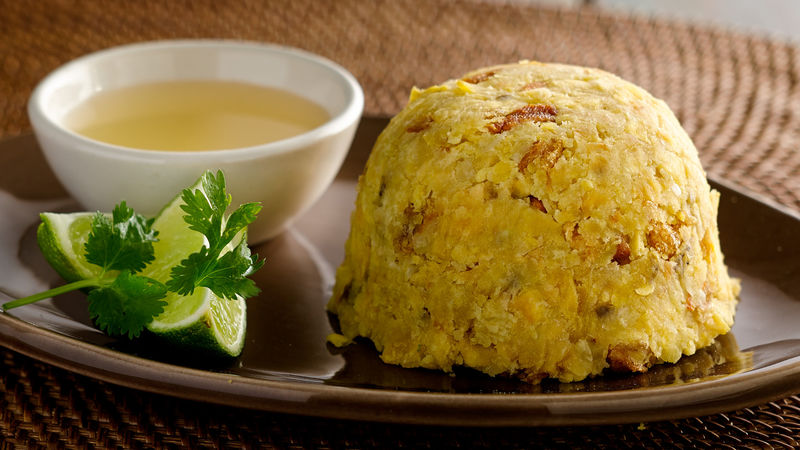

Welcome to the mofongo recipe page! Now hands on the ingredients(Two Servings):
| Ingredients |
Quantity |
| Green Plantains |
4 |
| Garlic cloves |
3 |
| Olive oil |
2 tablespoons |
| ketchup |
1 part |
| mayo |
1 part |
-
Step
Peel the plantains, cut them into 1-inch slices, put them on the hot skillet with oil.
-
Step
Fry them for about 6 minutes at medium heat or until they turn light brown(crisp texture). Make sure to turn them. Do not brown them too much, so they are easy to mash. Stick a fork in them to check if they are done.
-
Step
In a mortar(preferably wooden mortar) add salt and the garlic cloves. Smash the garlic until it becomes a soft paste.
-
Step
Add the olive oil to the mortar and the fried plantain, smash until uniform.
-
Step
Once you have mashed all the plantains, mold them into the shape of half sphere using your hands or a container. Serve hot with chicken broth or mayo-ketchup sauce.
-
Mayo-ketchup Sauce
Mix equal parts of mayo and ketchup into a container, add a pinch of salt and for extra flavour a pinch of garlic powder.